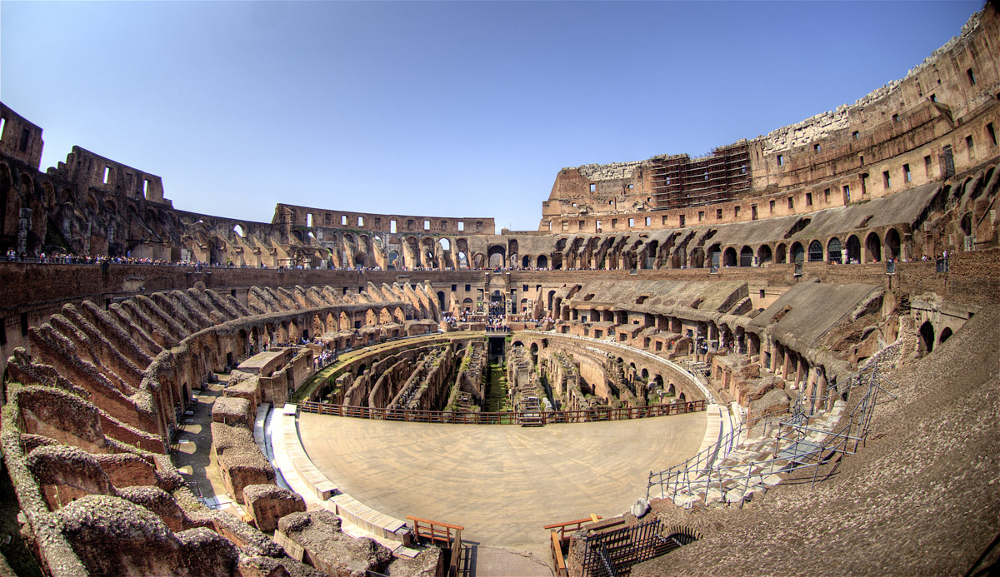

Colosseum
Completed in the year 80 during the reign of Titus, the Colosseum was the biggest amphitheater ever built by the Roman Empire. It once regularly hosted 50,000 spectators cheering and jeering at combating gladiators, executions and battle reenactments. While the baying crowds are no longer there, the structure itself has defied earthquakes, stone thieves and car pollution to remain standing today at the heart of Rome.

If you plan ahead and purchase combined tickets to the Colosseum, Roman Forum and Palatine Hill in advance, entrance to the famous site begins by breezing past the long line straight inside. But, even if you have to stand in line, don’t worry too much. What you’ll see when you enter this enormous amphitheater is worth the wait.
To get the most of the site, pay to join a tour when inside. You can also rent an audio guide. Although the interior of the Colosseum is now largely deteriorated, there is still much to see. The structure’s centerpiece is the hypogeum, part of the subterranean network, above which the arena floor would have been. Weave your way through the pillars and plant life at your leisure.

It is also possible to visit the winding network of underground tunnels — where the gladiators would steel themselves before facing the crowds — and the third level of the Colosseum. This must be done with a special guide and booked in advance. If you don’t manage this, take a walk around the entire outer edifice to admire the three-tiered travertine arches and see how the whole structure fits together. In particular, take note of the very bottom layer of arches, built not for aesthetics but rather as an essential means of crowd control.
While the gladiatorial tussles and live animal hunts are long gone, the Colosseum is still used from time to time as a spectacular backdrop for summer concerts, often for big performers like Paul McCartney and Simon and Garfunkel, so always check the schedule before you visit.
The Colosseum is in central Rome. Bus stops and the Metro train station Colosseo are all nearby.